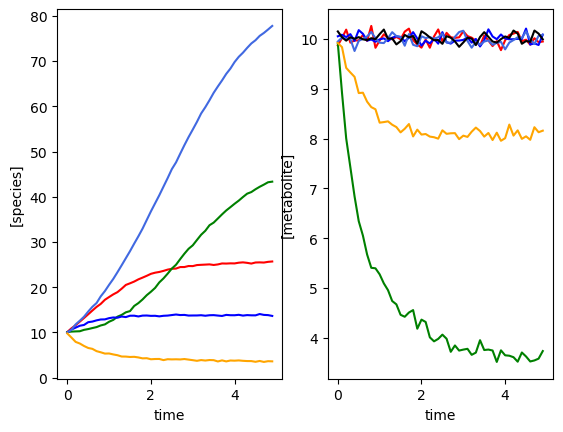
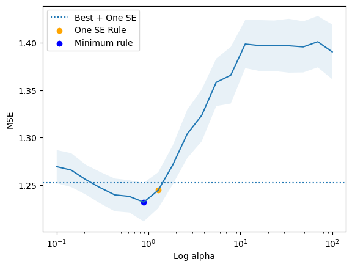
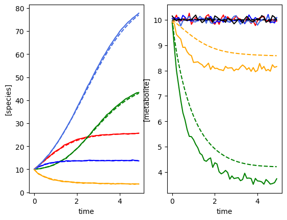
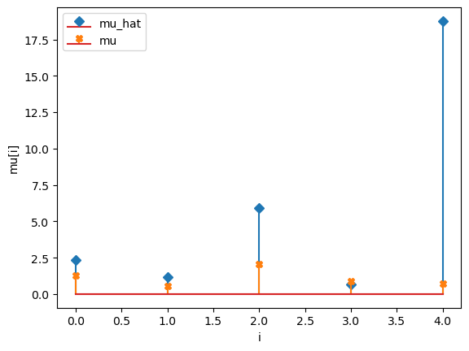
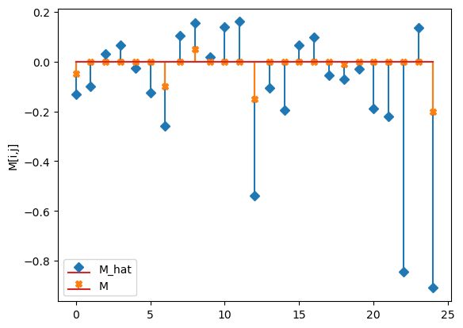
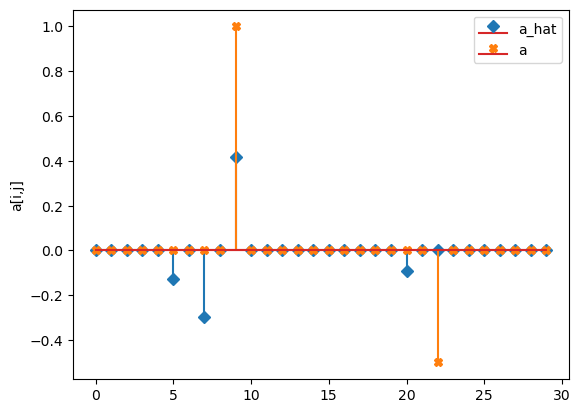

[1]:
from mimic.utilities.utilities import *
from mimic.model_infer import *
from mimic.model_simulate import *
import pandas as pd
import numpy as np
import matplotlib.pyplot as plt
from scipy.integrate import odeint
Run ridge regression and lasso for the gMLV model¶
Five species, six metabolites, single time course¶
This model assumes metabolite production is associated with abundance: dS/dt = alpha X
[5]:
# Simulate some microbiota and metabolites
set_all_seeds(1234)
# SETUP MODEL
# establish size of model
num_species = 5
num_metabolites = 6
# construct interaction matrix
# TODO do this programmatically
M = np.zeros((num_species, num_species))
np.fill_diagonal(M, [-0.05, -0.1, -0.15, -0.01, -0.2])
# M[0,2] = -0.025
M[1, 3] = 0.05
# M[4,0] = 0.02
# construct growth rates matrix
mu = np.random.lognormal(0.01, 0.5, num_species)
# construct metabolite production matrix
alpha = np.zeros((num_metabolites, num_species))
alpha[1, 4] = 1
alpha[4, 2] = -0.5
# instantiate simulator
simulator = sim_gMLV(num_species=num_species,
num_metabolites=num_metabolites,
M=M,
mu=mu,
beta=alpha)
simulator.print_parameters()
# PRODUCE SIMULATED RESULTS
# initial conditions
init_species = 10 * np.ones(num_species)
init_metabolites = 10 * np.ones(num_metabolites)
times = np.arange(0, 5, 0.1)
yobs, sobs, sy0, _, _, _ = simulator.simulate(
times=times, sy0=np.hstack((init_species, init_metabolites)))
# add some gaussian noise
yobs = yobs + np.random.normal(loc=0, scale=0.1, size=yobs.shape)
sobs = sobs + np.random.normal(loc=0, scale=0.1, size=sobs.shape)
# plot simulation
plot_gMLV(yobs, sobs, times)
Model parameters:
Model: gMLV
num_species: 5
num_metabolites: 6
num_perturbations: 0
mu: [1.28 0.56 2.07 0.86 0.7 ]
M: [[-0.05 0. 0. 0. 0. ]
[ 0. -0.1 0. 0.05 0. ]
[ 0. 0. -0.15 0. 0. ]
[ 0. 0. 0. -0.01 0. ]
[ 0. 0. 0. 0. -0.2 ]]
beta: [[ 0. 0. 0. 0. 0. ]
[ 0. 0. 0. 0. 1. ]
[ 0. 0. 0. 0. 0. ]
[ 0. 0. 0. 0. 0. ]
[ 0. 0. -0.5 0. 0. ]
[ 0. 0. 0. 0. 0. ]]
epsilon: []
Using the following parameters for gMLV simulation: {'num_species': 5, 'num_metabolites': 6, 'num_perturbations': 0, 'mu': array([1.27853844, 0.55683415, 2.06752757, 0.86387608, 0.70448068]), 'M': array([[-0.05, 0. , 0. , 0. , 0. ],
[ 0. , -0.1 , 0. , 0.05, 0. ],
[ 0. , 0. , -0.15, 0. , 0. ],
[ 0. , 0. , 0. , -0.01, 0. ],
[ 0. , 0. , 0. , 0. , -0.2 ]]), 'beta': array([[ 0. , 0. , 0. , 0. , 0. ],
[ 0. , 0. , 0. , 0. , 1. ],
[ 0. , 0. , 0. , 0. , 0. ],
[ 0. , 0. , 0. , 0. , 0. ],
[ 0. , 0. , -0.5, 0. , 0. ],
[ 0. , 0. , 0. , 0. , 0. ]]), 'epsilon': array([], shape=(5, 0), dtype=float64)}

Perform ridge regression to get the abundance model¶
[ ]:
# fit growth first
# linearise
X, F = linearize_time_course_16S(yobs, times)
# print(f"n: {num_species * F.shape[0]}, p: {num_species + num_species ** 2}")
# get the best lambda/alpha values on a grid via cross validation
a0, a1 = fit_alpha_Ridge1(X, F, num_species=num_species, n_a0=20, n_a1=20)
# do final fit
mu_h, M_h = do_final_fit_Ridge1(X, F, num_species, a0, a1)
Perform lasso regression to obtain interactions between X and S¶
[6]:
# fit metabolite production
# Linearize this problem
G, S = linearise_time_course_metabolites(sobs, yobs, times)
# get the best lambda/alpha value on a grid via cross validation
a_min, a_se = fit_alpha_lasso(G, S, n_a=20)
model = Lasso(fit_intercept=False, max_iter=10000, alpha=a_min)
# perform final fit
model.fit(G, S)
alpha_h = model.coef_
predictor = sim_gMLV(num_species=num_species,
num_metabolites=num_metabolites,
M=M_h,
mu=mu_h,
beta=alpha_h)
yobs_h, sobs_h, _, _, _, _ = predictor.simulate(
times=times, sy0=np.hstack((init_species, init_metabolites)))
# PLOT RESULTS
# plot comparison of simulated and predicted timeseries
plot_fit_gMLV(yobs, yobs_h, sobs, sobs_h, times)
compare_params(mu=(mu, mu_h), M=(M, M_h), alpha=(alpha, alpha_h))
minimum found: a/error: 0.8858667904100825 1.2319888587485222
min + se rule: a/error: 1.2742749857031335 1.2445655198949461

Using the following parameters for gMLV simulation: {'num_species': 5, 'num_metabolites': 6, 'num_perturbations': 0, 'mu': [2.3307427461359773, 1.17918873474841, 5.9405483694245165, 0.6657900524209724, 18.766720402152664], 'M': [[-0.13066413374701402, -0.09931811016999789, 0.031037791041588, 0.06447270641880148, -0.027444255102491398], [-0.12458060729415786, -0.2599641618316388, 0.10300487602902476, 0.15329593579727968, 0.017126878303179195], [0.1383328662228482, 0.1595201507624835, -0.5399190982864852, -0.1064815630510005, -0.1953463436009957], [0.06578196676131579, 0.09786112262758834, -0.055990378090474704, -0.07257676895576962, -0.0290848397186032], [-0.18720236721330555, -0.22155128234110122, -0.8434879772990354, 0.1360071753361419, -0.9089352896681516]], 'beta': array([[-0. , -0. , 0. , 0. , -0. ],
[-0.12887775, -0. , -0.29908791, -0. , 0.41942863],
[-0. , -0. , -0. , 0. , -0. ],
[ 0. , -0. , 0. , 0. , -0. ],
[-0.09063619, 0. , -0. , -0. , 0. ],
[-0. , -0. , 0. , -0. , 0. ]]), 'epsilon': array([], shape=(5, 0), dtype=float64)}
mu_hat/mu:
[ 2.33074275 1.17918873 5.94054837 0.66579005 18.7667204 ]
[1.27853844 0.55683415 2.06752757 0.86387608 0.70448068]
M_hat/M:
[[-0.13 -0.1 0.03 0.06 -0.03]
[-0.12 -0.26 0.1 0.15 0.02]
[ 0.14 0.16 -0.54 -0.11 -0.2 ]
[ 0.07 0.1 -0.06 -0.07 -0.03]
[-0.19 -0.22 -0.84 0.14 -0.91]]
[[-0.05 0. 0. 0. 0. ]
[ 0. -0.1 0. 0.05 0. ]
[ 0. 0. -0.15 0. 0. ]
[ 0. 0. 0. -0.01 0. ]
[ 0. 0. 0. 0. -0.2 ]]
a_hat/a:
[[-0. -0. 0. 0. -0. ]
[-0.13 -0. -0.3 -0. 0.42]
[-0. -0. -0. 0. -0. ]
[ 0. -0. 0. 0. -0. ]
[-0.09 0. -0. -0. 0. ]
[-0. -0. 0. -0. 0. ]]
[[ 0. 0. 0. 0. 0. ]
[ 0. 0. 0. 0. 1. ]
[ 0. 0. 0. 0. 0. ]
[ 0. 0. 0. 0. 0. ]
[ 0. 0. -0.5 0. 0. ]
[ 0. 0. 0. 0. 0. ]]



